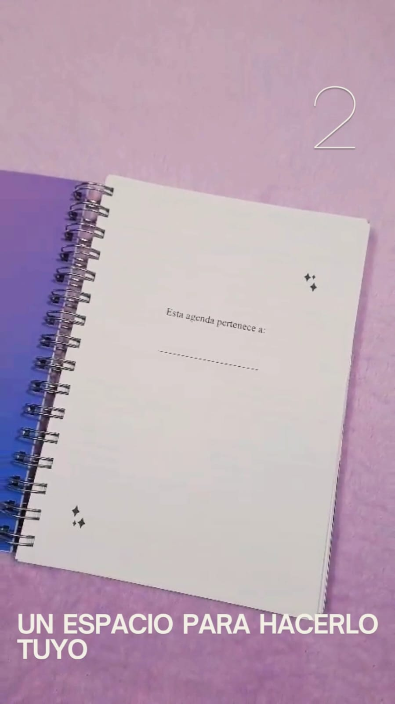
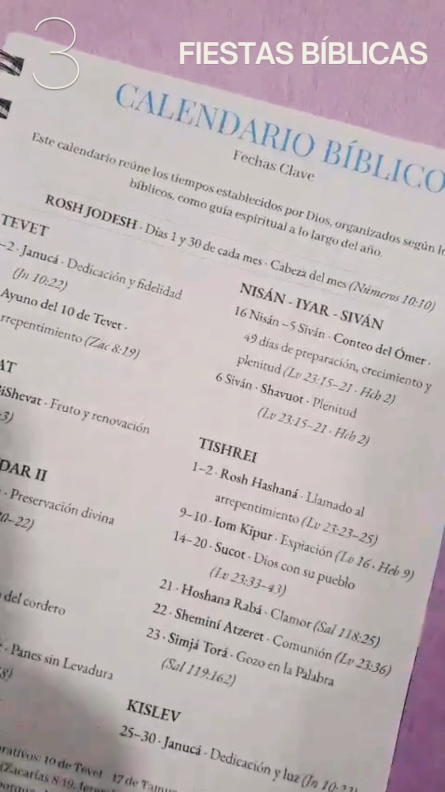
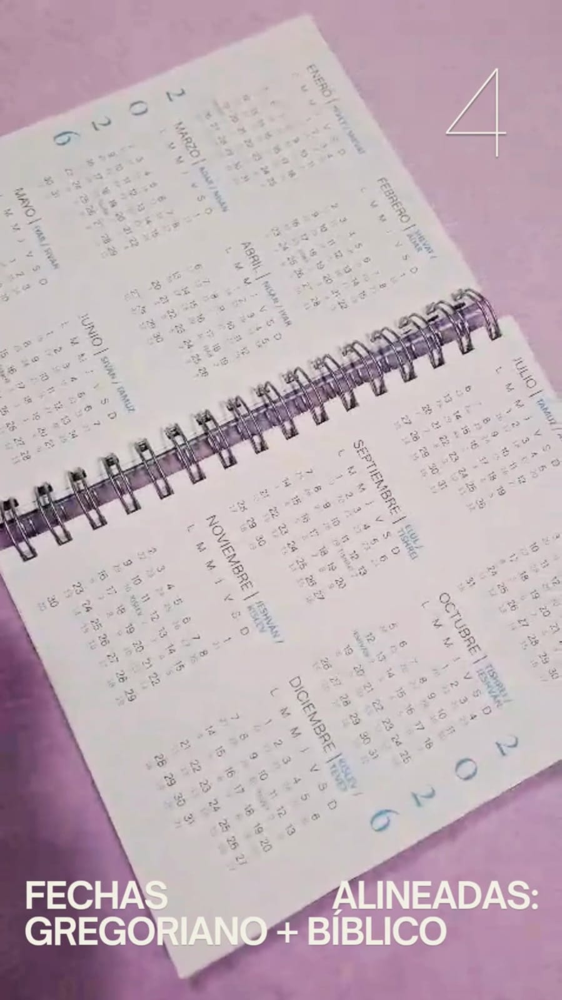
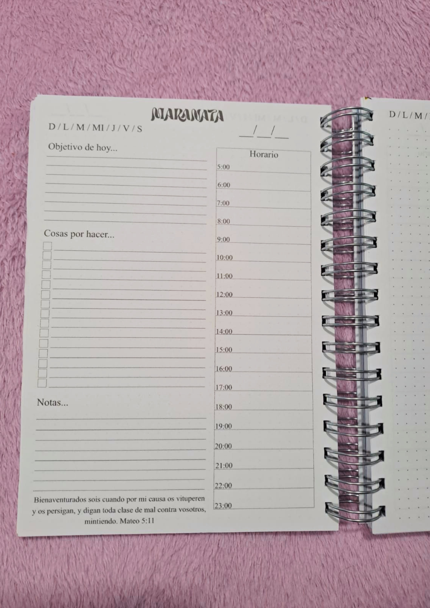
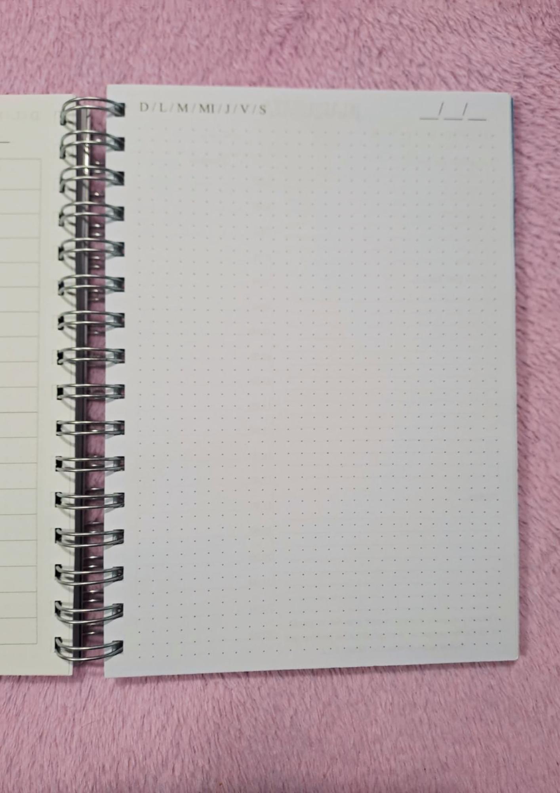
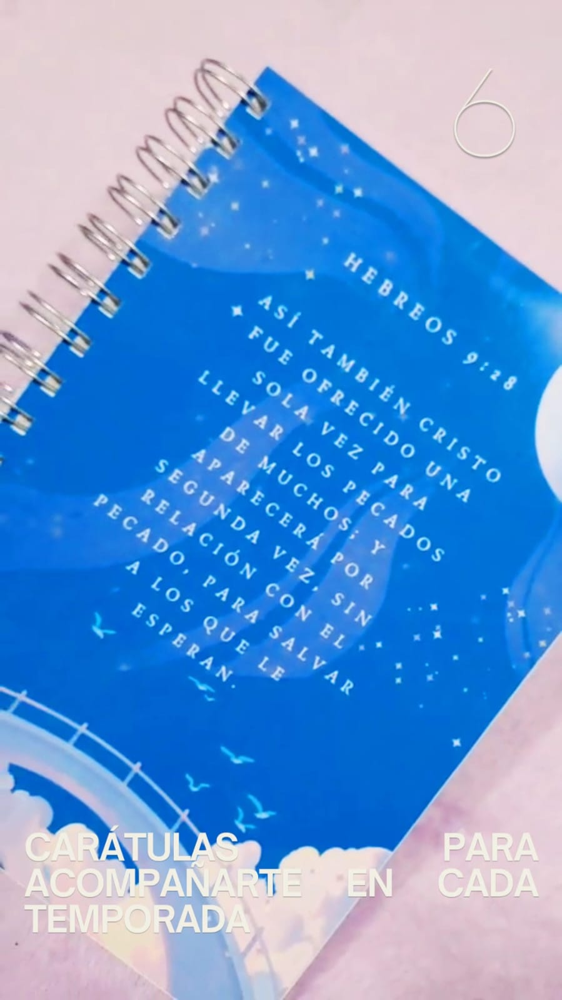
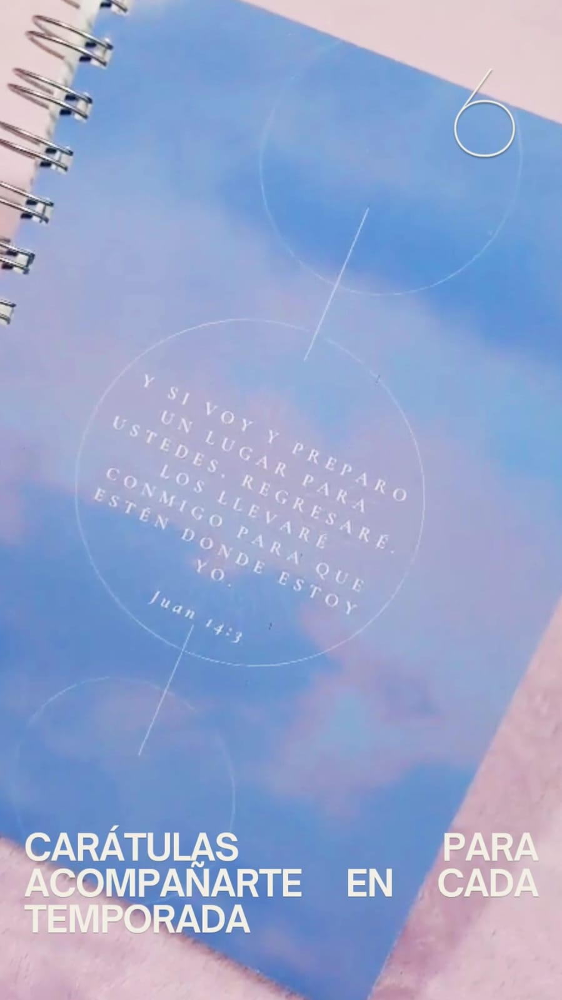
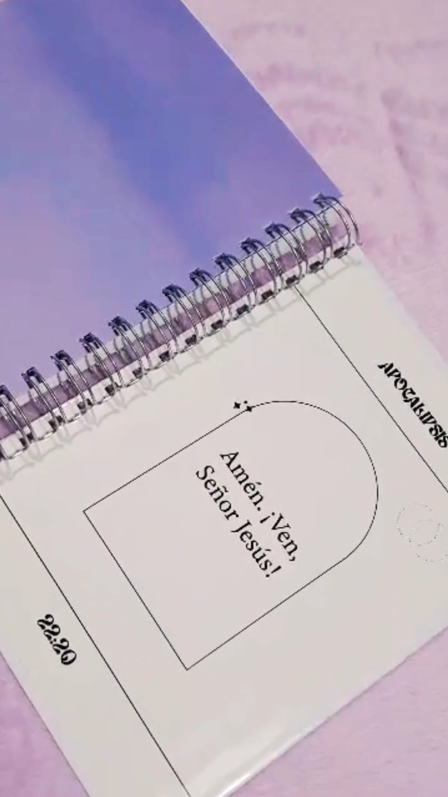

Agenda Maranata
$ 18.000

La agenda Maranata está diseñada para acompañarte en tu día a día, combinando organización y contenido que inspira.
Incluye versiculos para acompañarte cada día.

Contiene 90 hojas de 90 g de alta calidad.

Calendario bíblico con fechas importantes mencionadas en la palabra de Dios.

Calendario bíblico y gregoriano, integrando tiempos sagrados y cotidianos.

Espacios diarios con objetivo del día, tareas, horarios y versículos.

Espacio para notas.
Carátulas con versículos.



Incluye stickers + señalador para decorarla como más te guste.
Una agenda tamaño A5 pensada para quienes buscan organizarse mejor y aprovechar cada día al máximo.
Agregar al carrito